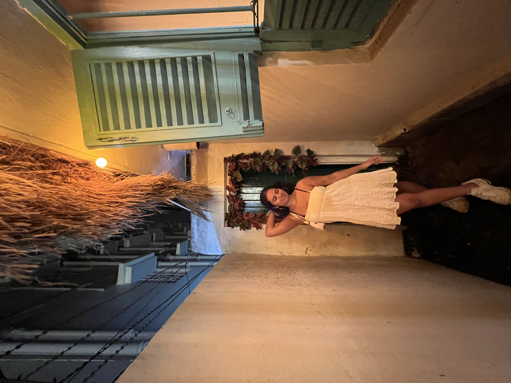
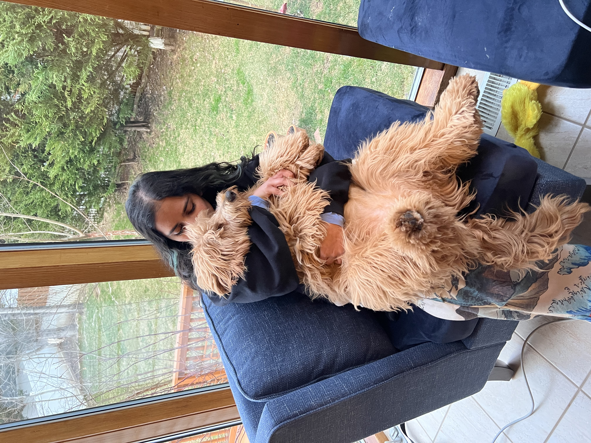
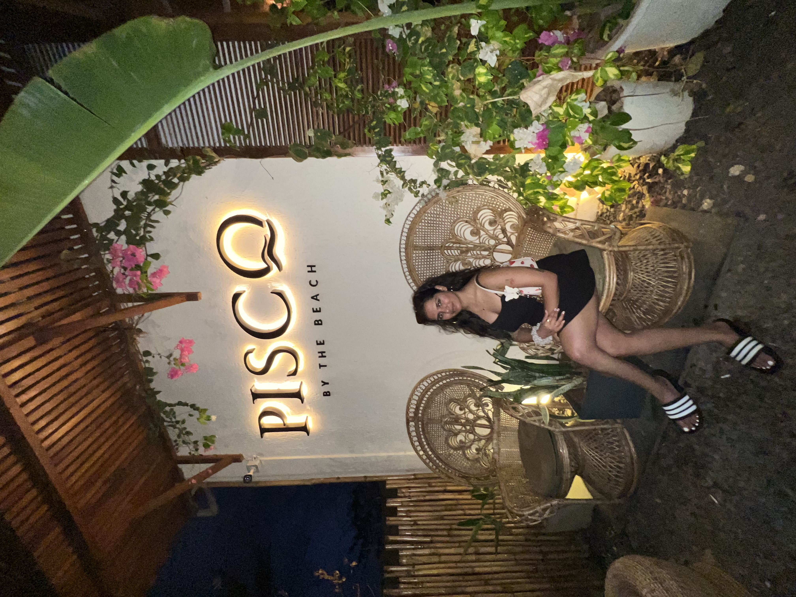
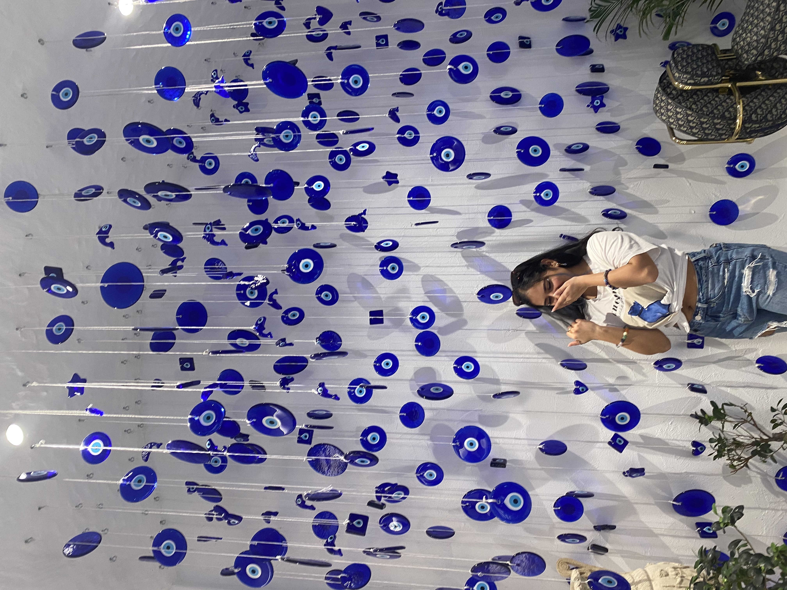
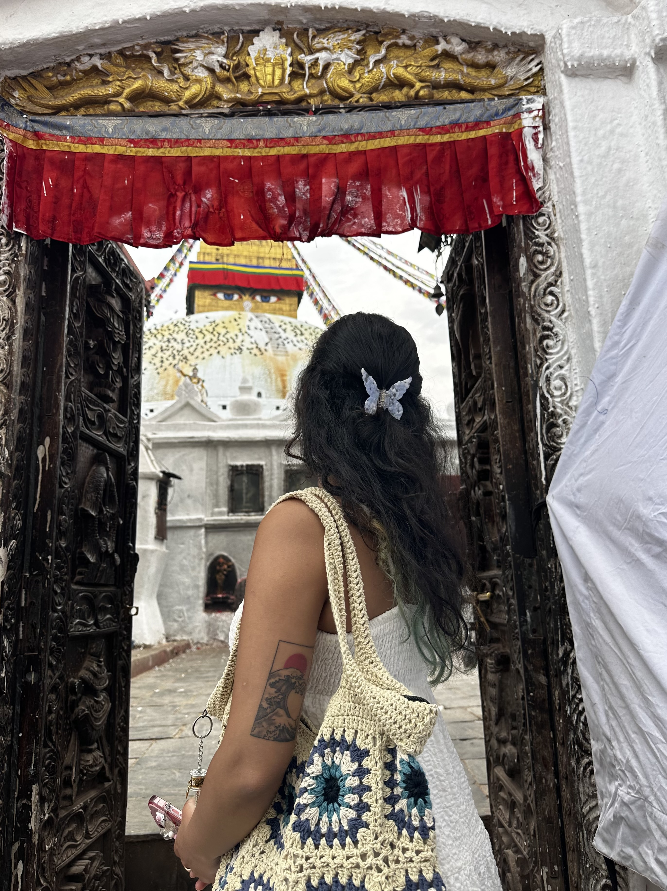
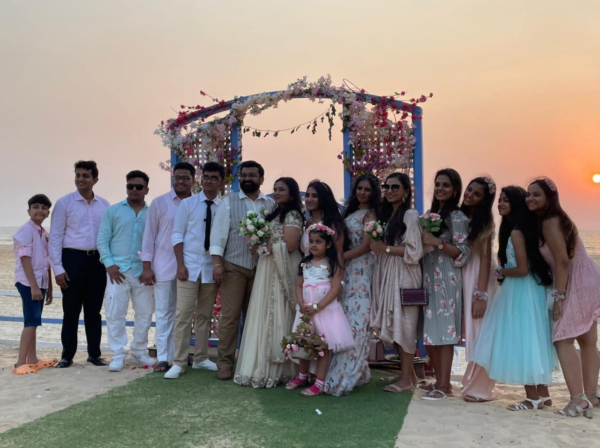
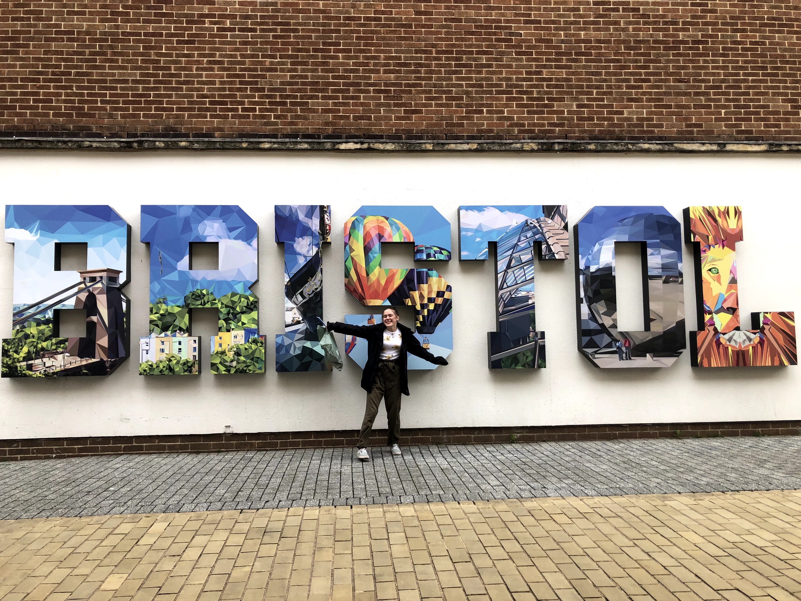
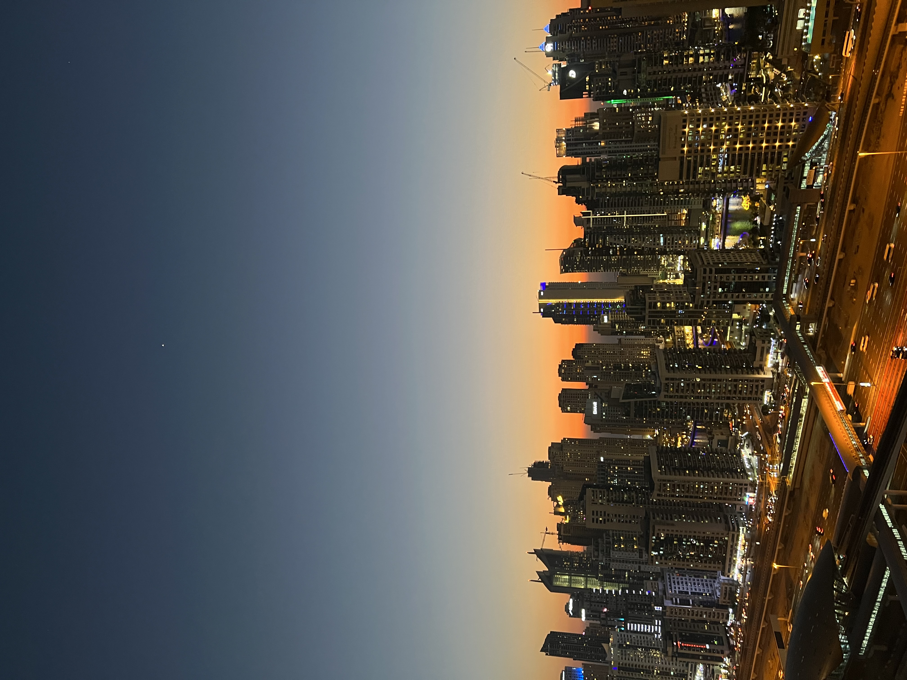
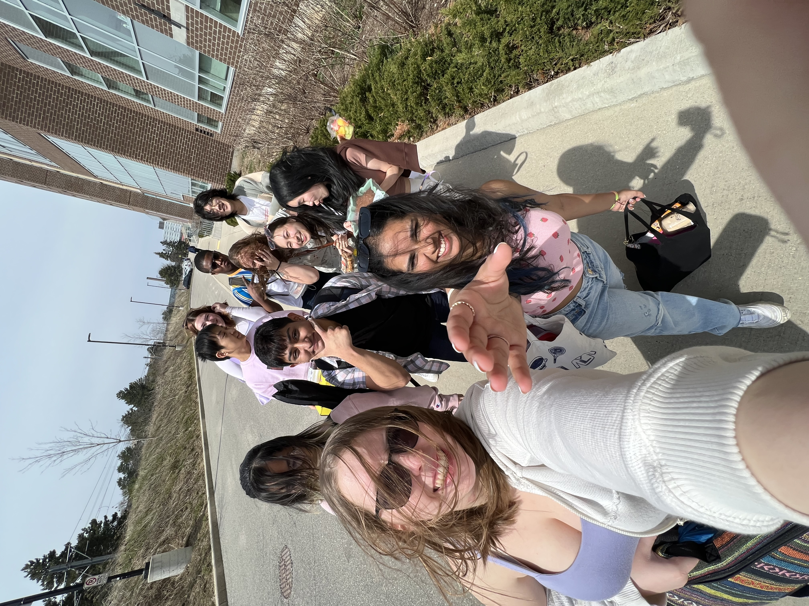
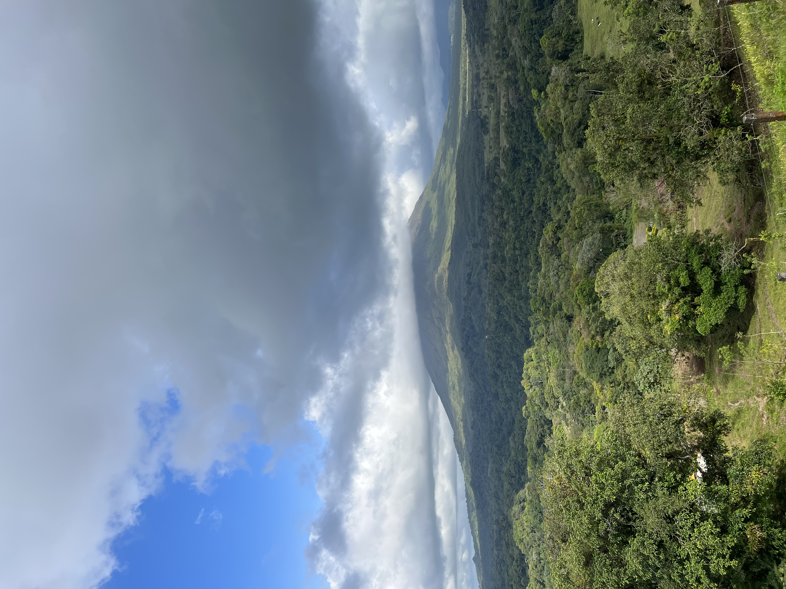

RACHITA KHETAN
ABOUT ME
I am 19 years old and so far I have lived in 6 countries, 9 cities and 3 continents.
Each of these places has shaped me as an individual and made me the creator I am today.
However, I believe Canada is the one place I grew the most as I came in as
an international student and had to figure life out by myself without my parents or any known soul.
Although this expanded my life skills, GBDA is the one that made me a designer, a creative thinker and a marketer.
Throughout this website you will see and understand how each experience has led to the becoming of the person on the right.






BACKGROUND
2003
INDIA
2018
UK
2020
DUBAI
2022
CANADA
2023
COSTA RICA & US
INDIA

I was born in India, in a small village of Bihar. I wasn't there for long and moved to another state in India called Chennai after just 2 months. Here I stayed for just a year until moving to yet another state called Bangalore. This was the first and last place I stayed at for the longest period of 10 years. Since most of my upbringing took place here I often tell people I am from Bangalore even though I really am from a multitude of places. After Bangalore we moved to Mumbai for 4 years. I spent a brief amount of my teenage years here and so I do identfy mostly with Bombay, as this is the place I remeber the most about. India to me is a place that is extremely rich in culture and colours. All of my current creativity stems from here. I used to make cardboard slippers, clay diyas and go for numerous art classes. I spent my entire childhood almost crafting products and selling them in small amrket stalls, which has now become a huge part of me.
UK

I moved to the UK when I was 14 years old. I moved to small city called Bristol where I resided for 2 years. This was the first big move for me and my family. We often shifted houses and states due to my father's job and this was the first move out of the country. We had to leave behind everything and everyone we ever knew. I had never experienced a culture like this before. It was a new place with new customs and nothing familiar. To make matters worse I joined a private all girls high school, which was also predominantly white. Although these 2 years were arguably the hardest and most uncomfrotable years, I did learn a lot through this experience. I learned how to adapt, adjust and most mportantly how to be respectful of other people's cultures and customs. I did eventually make friends that I talk to till this day but the journey was a very bumpy one. I believe this shift made me mature a lot faster than my freinds back at home and little did I know this was the first of many big moves to come.
DUBAI

Dubai so far is my favourite place that we have moved in to. It showed me a whole new world and was an astounding experience. I moved here when I was 16 years old in the middle of the pandemic. I started 11th grade but only 6 months later, I had to move into a boarding school in Bangalore to finish my high school due to my father's job. My family remained in Dubai while I juggled constantly between Bangalore and Dubai for the next 2 years. However, I will say that this was a blessing in disguise as I finally got to reconnect with all of my friends after 6 years and make the best of friends in my new school whom I now call my family. While all of my friends once again resided in India, I had no friends to go back home to until I met 3 other girls who had the same background as me in terms of the number of countries we had lived in and one of them was in the same situation as me as she too was doing boarding school in India. I think its fair to say that all factos combined and especially having found these girls Dubai turned out to be the best place I have lived in and I plan on going back and residing there in my 30's.
CANADA

hi my name is.
COSTA RICA

hi my name is.
UNITED STATES

hi my name is.